Właściwości wybranych roślin
Codziennie otaczamy się wieloma roślinami. Oprócz wspaniałej dekoracji wnętrz domów, czy ogrodów, a także dostarczaniu tlenu rośliny posiadają wiele drogocennych składników, które są niezwykle pożądane w kosmetologii i nie tylko. Niektóre rośliny mają nawet więcej składników odżywczych niż kosmetyki, dlatego też cieszą się dość dużą popularnością. Są gwarancją naturalnych składników, a nie tylko związków chemicznych i sztucznych preparatów stosowanych do produkcji wielu kosmetyków.
RUMIANEK: Rumianek pospolity (łac. Matricaria chamomilla) jest rośliną powszechnie spotykaną np. na łąkach i polach. Charakteryzuje sie małymi biało-żółtymi kwiatami, bogatymi w wiele składników odżywczych, ponieważ posiada m.in.: sole mineralne, witaminę C, olejki eteryczne, cholinę, flawonoidy.
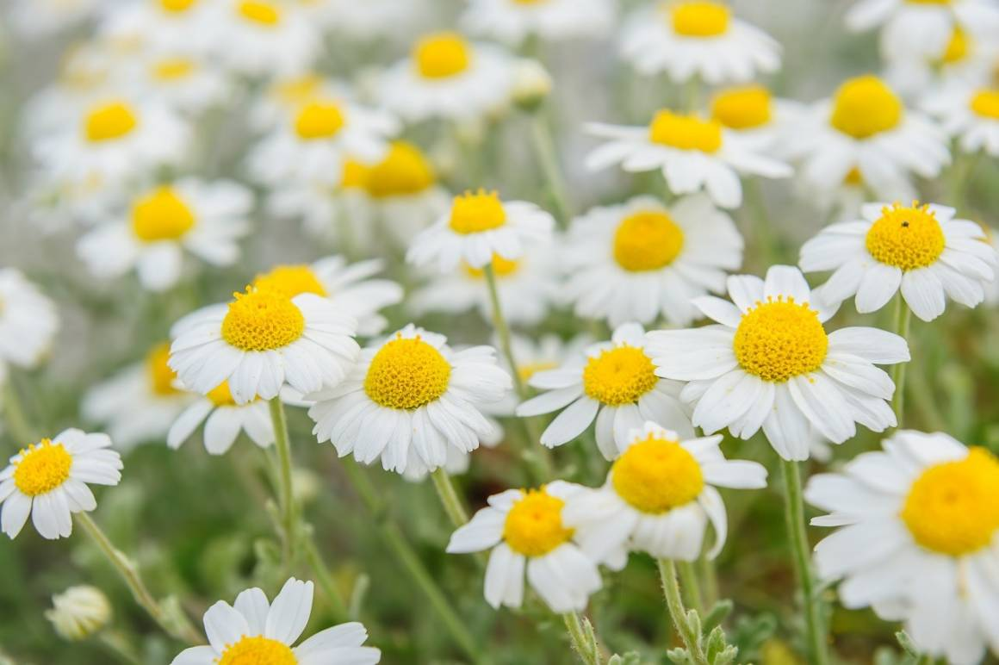NAGIETEK: Nagietek lekarski (łac. Calendula officinalis) jest rośliną leczniczą i ozdobną, dlatego można go spotkać jako rosnącego dziko. Nagietek pochodzi z rodziny astrowatych, ma żółte/pomarańczowe płatki i niewielkie, zaokrąglone liście. Nagietek posiada: flawonoidy, karotenoidy, polisacharydy, kwasy fenolowe.
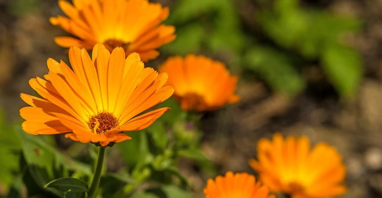ALOES: Aloes (łac. Aloe vera) to roślina powszechnie posiadana w domu jako roślina ozdobna. Ma charakterystyczne mięsiste, trójkątne liście. Aloes zawiera witaminy A, C, E, B12, kwas foliowy, liczne enzymy, wapń, chrom, miedź, selen, magnez, potas, sód, cukry, hormony przyspieszające gojenie się ran oraz kwas salicylowy.
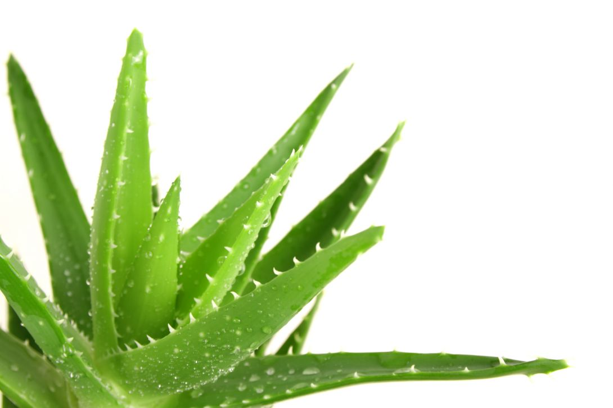MIŁORZĄB: Miłorząb japoński (Ginkgo biloba) to długowieczne drzewo pochodzące z Chin. Charakteryzuje się liśćmi kształtem przypominające rozłożony wachlarz. Miłorząb jest bogaty m.in. w: karoten, selen, witaminy C oraz E, fitosterole, kwasy fenolowe, terpeny, flawonoidy.
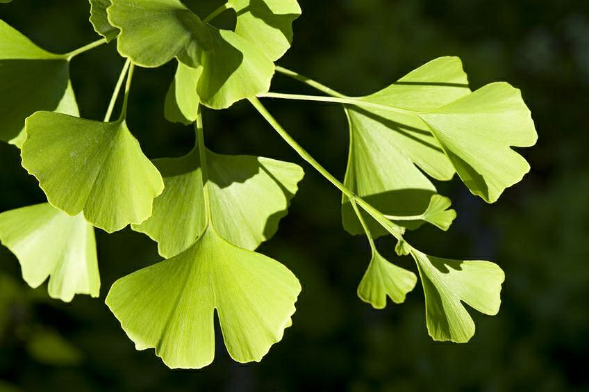DZIKA RÓŻA: Dzika róża występuje w Polsce aż w 23 gatunkach. Jest krzewem z rodziny różowatych o charakterystycznych czerwonych kulistych owocach, w których zawarte są nasiona. Dzika róża znana jest z wysokiej zawartości witaminy C - posiada jej o wiele wiecej niż cytrusy.Roślina zawiera także witaminy A, K, E, B1, B2, pektyny, garbniki, flawonoidy, kwas omega-3 oraz omega-6.
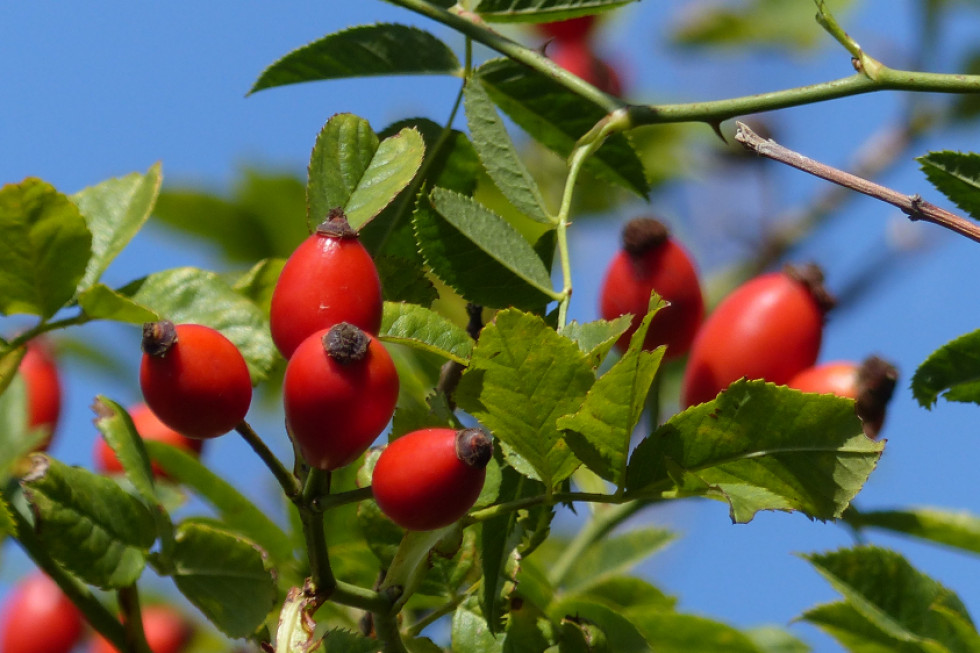CZARNY BEZ: Czarny bez jest rośliną często spotykaną jako dziko rosnący krzew. Jego białe kwiaty przemieniają się z czarne małe owoce, które po rozduszeniu bardzo brudzą, ponieważ znajduje się w nich czerwony sok. Czarny bez posiada wiele cennych składników. Jego kwiaty zawierają kwasy organiczne, sole mineralne, flawonoidy, garbniki oraz olejki eteryczne. Z kolei owoce czarnego bzu posiadają witaminy A, B, C, wapń, żelazo, fosfor, pektyny, garbniki.
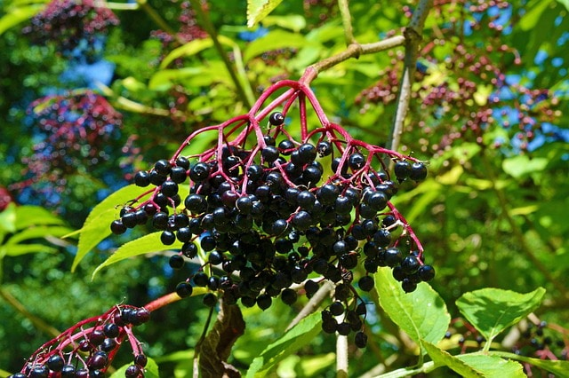MIĘTA: Mięta (łac. Mentha) to bylina występująca w wielu gatunkach, najpopularniejsze z nich to mięta pieprzowa, zielona oraz polna. Łodygi mięty są silnie rozgałęzione, zielone lub brązowo-zielone, a ich liście są zielone, owalne, zaostrzone na końcach. W liściach mięty występują: mentol, flawonoidy, kwasy organiczne, sole mineralne, gorycze oraz garbniki.
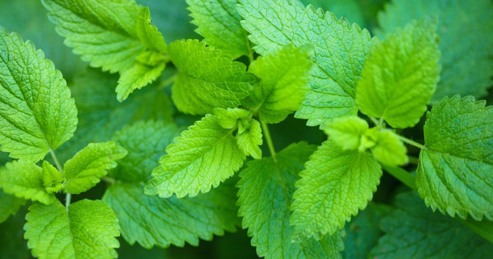ŻEŃ-SZEŃ: Żeń-szeń (łac. Panax ginseng) to bylina pochodząca z Azji. Ze względu na wysokie wymagania klimatyczne jest bardzo trudna w uprawie. Najbardziej cenny jest korzeń rośliny znajdują się w nim m.in. witaminy B1, B2, B12, C, E, panaksany, panaksynole, żelazo, magnez, wapń, krzem, fosfor, mangan, cynk, siarka, poliacetyleny, fitosterole, związki fenolowe, olejki eteryczne, cukry.
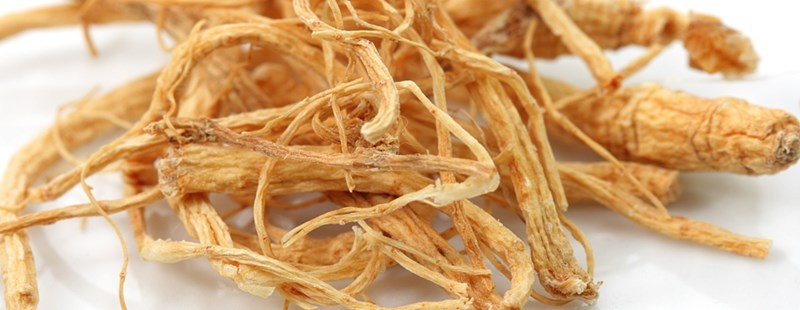MELISA: Melisa lekarska (łac. Melissa officynalis) to bylina o silnie rozgałęzionych, pokrytych włoskami łodygach. Liście melisy mają sercowaty kształt, a po roztarciu pachną cytryną. Roślina zawiera olejki eteryczne, garbniki, fenolokwasy, śluzy, flawonoidy, witaminę C, gorycze, kwasy fenolowe, miedź, mangan, cynk, żelazo.
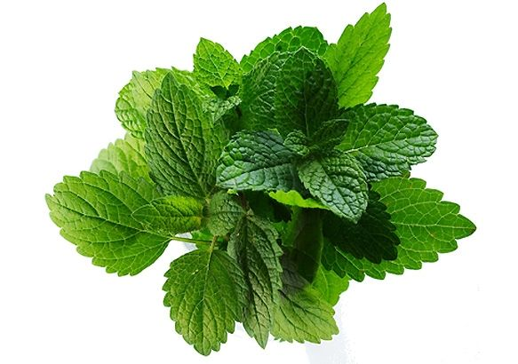SZAŁWIA: Szałwia lekarska (łac. Salvia officinalis) to półkrzew o rozgałęzionych łodygach i długich, wąskich liściach. Szałwia pochodzi z regionów śródziemnomorskich, gdzie rośnie w suchych miejscach o dużym nasłonecznieniu. Roślina ta posiada w liściach olejki eteryczne, taniny, flawonoidy, garbniki, goryczy, kwasy organiczne, karoten, witaminy A, C, B, wapń, magnez, potas, sód, cynk, żelazo.
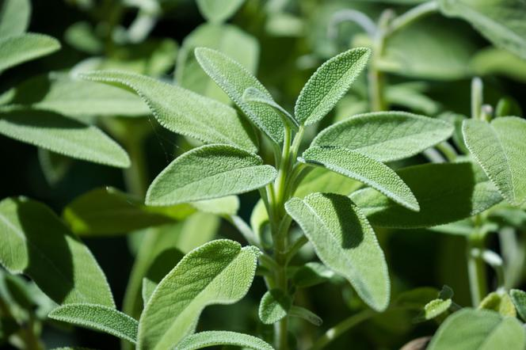LAWENDA: Lawenda (Lavandula) to wiecznie zielony krzew, pochodzący w regionów śródziemnomorskich o charakterystycznym zapachu i małych fioletowych kwiatach. Lawenda zawiera dużo garbników, triterpenów, kwasów organicznych oraz soli mineralnych. Posiada również eteryczny olejek lawendowy, polifenole, flawonoidy, a także kwas oleanowy.
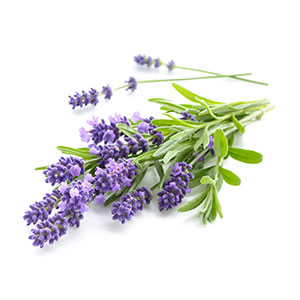